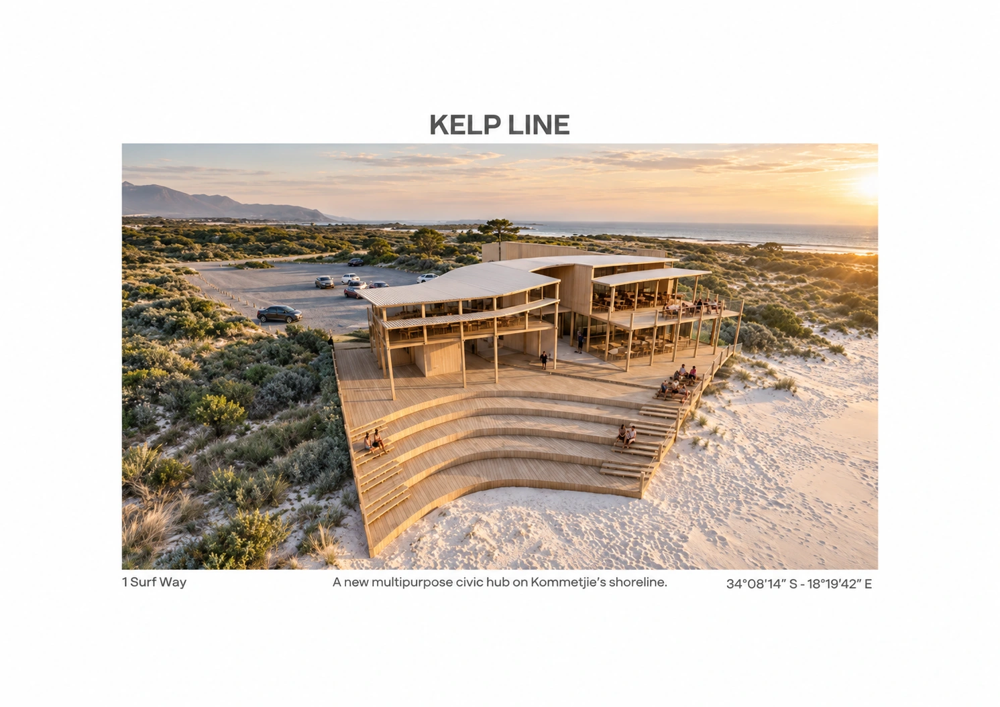
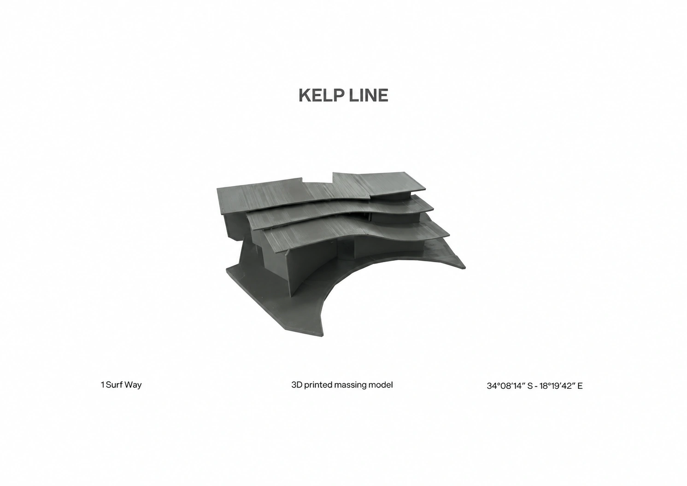
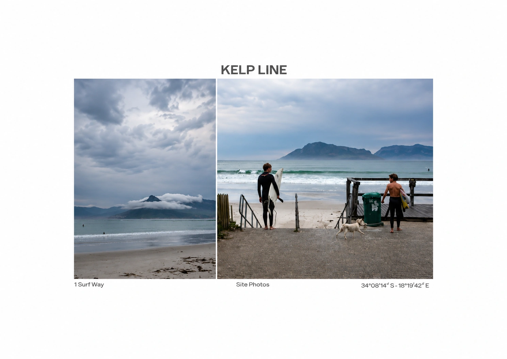
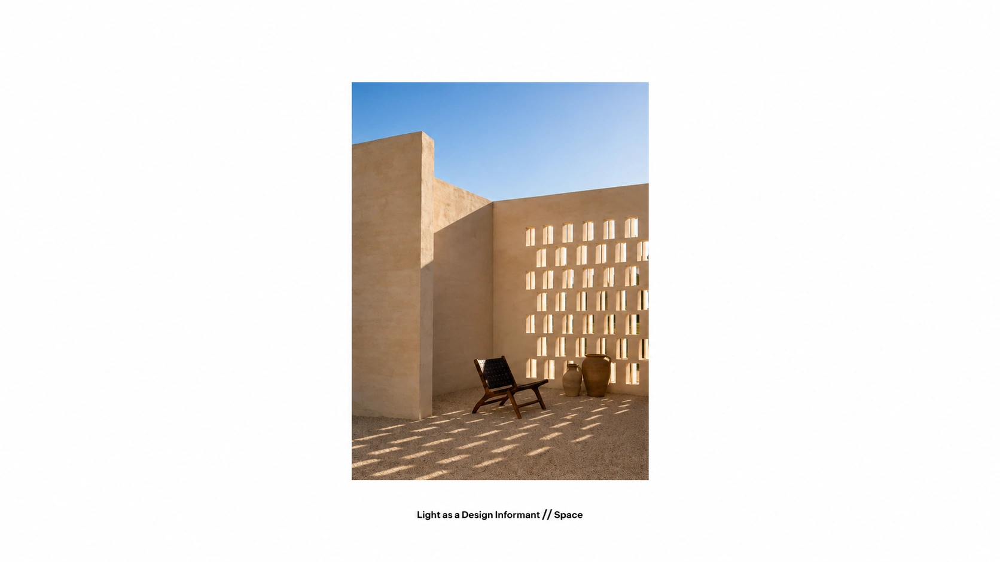
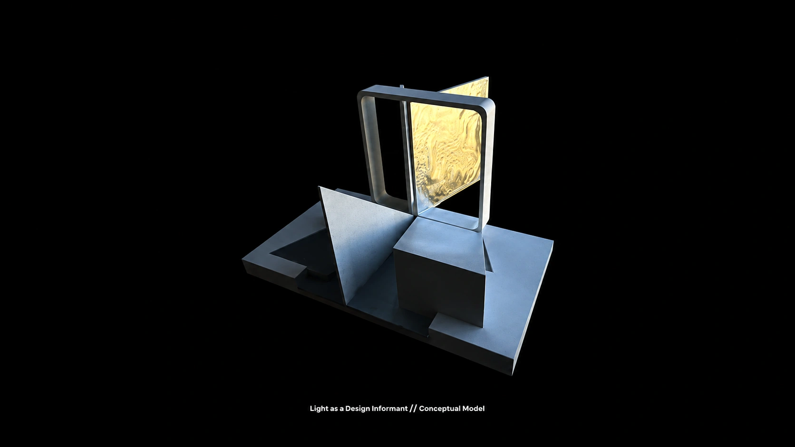
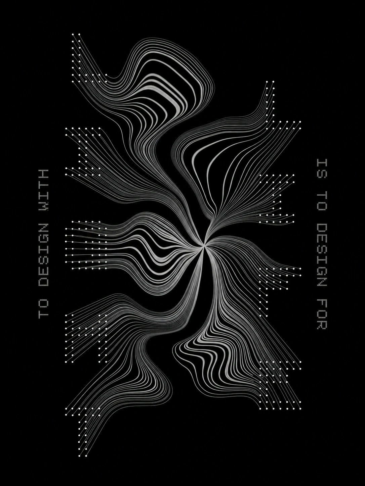
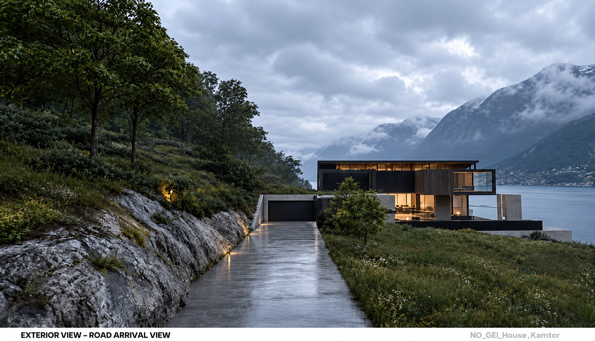
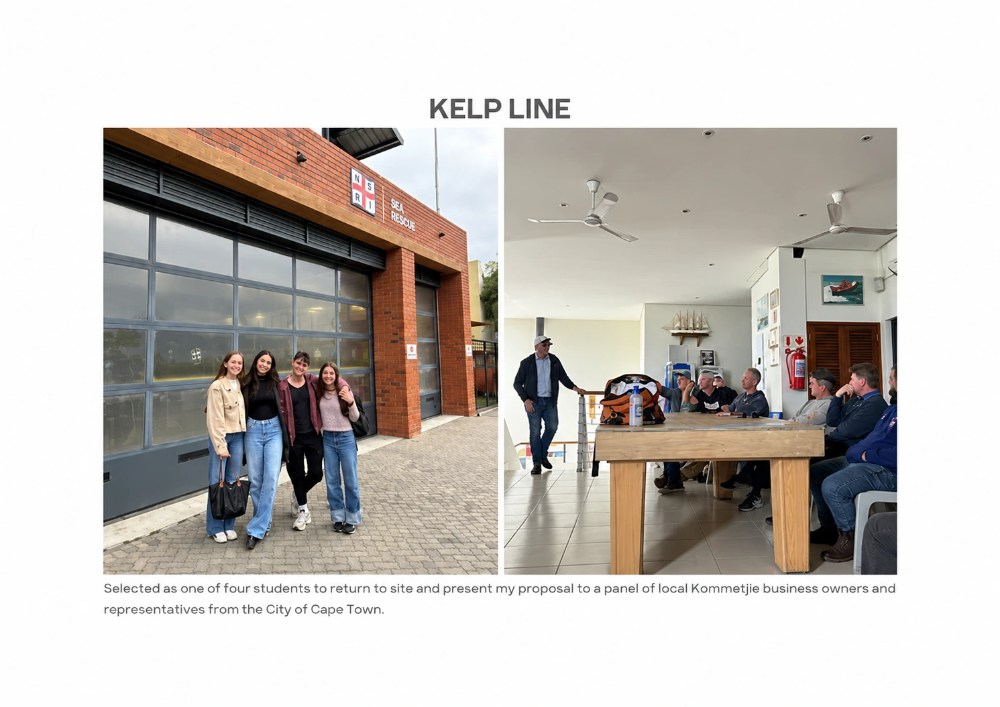

Emma Steyn · Digital architecture portfolio
Selected works / 2024—2026Spaces shaped
by place.
I design in response to the landscape, light and character of each site, creating spaces that belong to their surroundings.
Architecture in conversation with its surroundings.Scroll to explore
01 / The portfolio
Projects.
A study in context, material and human experience.
02 / A little about meHi, I’m Emma.
Hi, I’m Emma.
Curious by nature.
I bring energy, optimism and curiosity to the things I make — and I’m always looking for something new to learn.
I’m studying architecture at the School of Explorative Architecture, after completing a degree in Human Life Sciences at Stellenbosch University. That background in science shapes the way I ask questions: about people, the places we inhabit, and how design can make those places feel.
What I enjoy
I’m drawn to the hands-on side of design: sketching an idea, exploring colour in watercolour, and building models to see how a space might work. Light, landscape and the small details of a place are recurring interests in my work.
I also enjoy working through ideas with others. I value clear communication, collaboration and the chance to learn from the people around me — something I’ve taken into my student internships at Hours Clear Architects and SAOTA.
English & Afrikaans New Architecture Now 2025 finalist
03 / From the sketchbook
@arch.by.em On Instagram.
emarch.by.emArchitecture & exploration

arch.by.em Kelp Line · On the shorelineView post on Instagram
emarch.by.emArchitecture & exploration

arch.by.em Kelp Line · Made in miniatureView post on Instagram
emarch.by.emArchitecture & exploration

arch.by.em Kommetjie · Reading a placeView post on Instagram
emarch.by.emArchitecture & exploration

arch.by.em Light · Space and shadowView post on Instagram
emarch.by.emArchitecture & exploration

arch.by.em Light · A physical ideaView post on Instagram
emarch.by.emArchitecture & exploration

arch.by.em Light · Lines in motionView post on Instagram
emarch.by.emArchitecture & exploration

arch.by.em House Kamter · In the landscapeView post on Instagram
emarch.by.emArchitecture & exploration

arch.by.em Kelp Line · People and placeView post on Instagram
Little moments of making, observing and exploring.
04 / Get in touch
Contact me.
Have a project in mind, a question, or an idea to share? I’d love to hear from you.
emmasteyn4@icloud.com Instagram